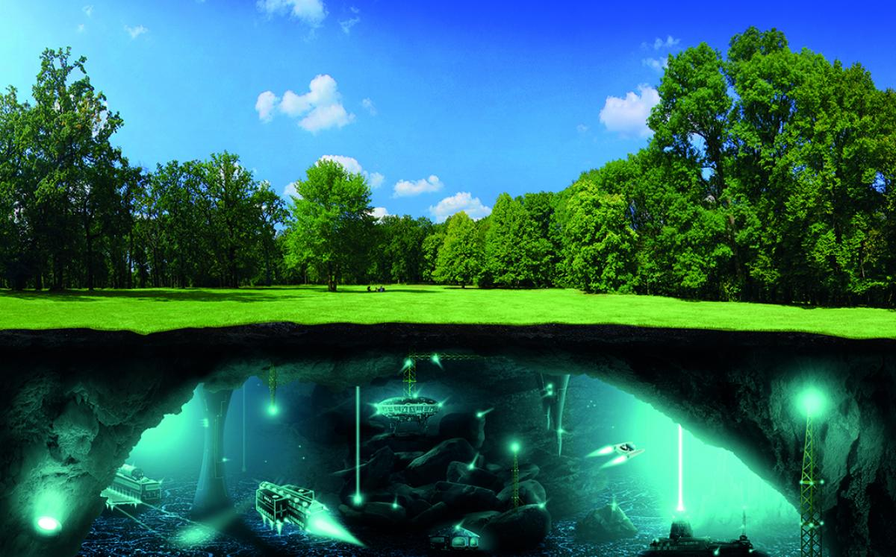
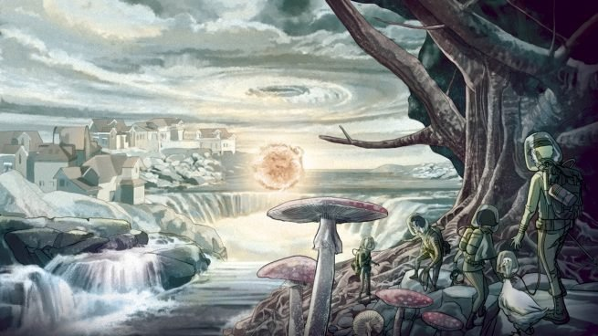

Según las hipótesis más insólitas, existe una raza alienígena que llegó a nuestro planeta mucho antes que el ser humano y desde entonces habita en su interior. Otras teorías hacen referencia a antiguas civilizaciones perdidas en el océano, como la Atlántida o Hiperbórea. Estas han continuado su desarrollo bajo tierra y son capaces de comunicarse con el exterior a través de pequeñas puertas situadas en el mar. De hecho, afirman que el Triángulo de las Bermudas es una de estas entradas secretas.
Importantes autores de la literatura fantástica, como Julio Verne o H.P. Lovecraft, ya mencionaron en sus páginas la existencia de una tierra dentro de nuestro propio planeta. Sin embargo, el primer testigo de este fenómeno fue, al parecer, un piloto explorador de la US Navy. Richard E. Byrd sobrevoló en numerosas ocasiones el territorio antártico. Pero no fue hasta la aparición de Amadeo Giannini cuando su expedición alcanzó una gran controversia.
¿Qué es la hipótesis de la Tierra hueca?
Las teorías afirman que los Polos son la entrada principal a este mundo paralelo.
El autor de ‘Mundo más allá de los Polos’ aseguró que Byrd había avistado en realidad dos grandes agujeros que conducían al interior de la Tierra. El escritor Ray Palmer también defendió dicha teoría e incluyó más datos sobre el orbe que supuestamente se encuentra bajo nuestros pies. Lo describe como un lugar hermoso, plagado de montañas, lagos y vegetación. Donde reside una criatura misteriosa similar a los mamuts ya extintos.
Tierra hueca |
||
.jpg) |
 |  |